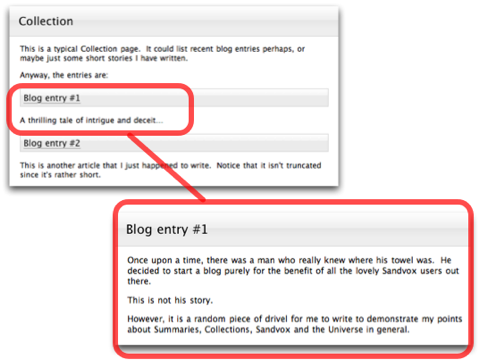

Summary
A summary is a piece of text describing a page. The summary can then be displayed in a collection's index.
For example, a typical collection page contains summaries like this:
Note how the summaries link up to their respective pages in the collection:
As you make changes to the page the summary automatically updates itself.
Article Length
Often a page contains a large amount of text. If all of this text is included in a summary, and there are several summaries like this, it can make a collection page very long and difficult to read.
To solve this, Sandvox allows you to limit the length of summaries.
To limit the length of the summaries of a collection:
- Select the Collection in the Site Outline.
- Select the text of the article summary.
- Open the Object Inspector.
- Use the slider next to "Article Length" to shorten or lengthen the articles in the collection.
At the end of the summary, a link will automatically appear that says "Continue reading" followed by @@ (which stands in for the title of the article). Visitors can then click the link to be taken to the full article. You can edit this text, but whatever edits you make will carry over to the entire site.
Custom Summaries
You can also give a page a custom summary. With a custom summary, the summary text is not automatically taken from the page it links to. Instead, you edit the text yourself, completely independently of the page's content.
This is useful if you find that a simple truncated text summary is not sufficient for a particular page. For example you could do something like this:
